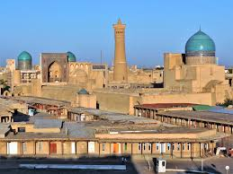
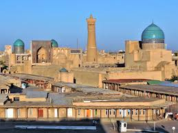

Buxoro shahri eng qadim zamonlarda qanday atalganligi — nomaʼlum. Milodiy V asrga oid xitoy manbalarida Buxoro shahri Nyumi tarzida tilga olinib oʻtilgan. Binobarin, shaharda shu nomdagi mulk hukmdorining qarorgohi ham boʻlgan. Tan imperiyasining VII asrga oid solnomalarida Buxoro shahri An (Ango), Ansi, Buxo (Buxe, Fuxo) shakllarida qayd etib oʻtilgan. Keyinchalik shahar turlicha atala boshladi. Arab tilidagi qadimgi manbalarda u Bumiskat, Madinat us-sufriya (Mis shahar), Numijkat (soʻgʻdcha numij yoki namich degani mashhur degan maʼnoni anglatgan) tarzida keltirilgan. Qadimgi zamonlarda yashagan mahalliy mualliflarning fikricha, shaharning nomi Buxor, yaʼni „Sanamlar turgan ibodatxona“ maʼnosini anglatuvchi bir soʻzdan kelib chiqqan. Muhammad paygʻambar hadislaridan birida esa Buxoro shahri Foxira deb tilga olinib oʻtilgan. Bu arabcha soʻz magʻrur, faxrli, iftixorga loyiq, buyuk maʼnosida keladi. Ayrim tadqiqotchilarning faraz qilishlaricha, Buxoro nomi mintaqaning eng asosiy buddaviylik ibodatxonasi vixara yoki ana shu vixaraning turkiycha transkripsiyasi boʻlmish buxoro (ibodatxona) soʻzidan kelib chiqqan. Biroq buddaviylik va moniylik diniy taʼlimotlariga oid osori atiqalar shahar hududida ham, umuman, Buxoro vohasida ham topilgan emas. Aytilishicha, qadim zamonlarda butun boshli voha Buxoro deb atalgan, faqat X asrda bu nom uzil-kesil shaharga koʻchib oʻtib, barqarorlashgan.
 

Oʻzbekiston Respublikasi Samarqand viloyatidagi qadimgi shahar. Viloyatning maʼmuriy, iqtisodiy va madaniy markazi (1938 yildan). 1925—30 yillarda Respublika poytaxti. Oʻzbekistonning janubi-gʻarbida, Zarafshon vodiysining oʻrta qismida (Dargʻom va Siyob kanallari orasida) joylashgan. Oʻrtacha 695 m balandlikda. Toshkentdan 300 km. Sdan Toshkent—Dushanbe, Toshkent—Turkmanboshi, Toshkent—Uchquduq—Qungʻirot temir yoʻllari, Katta Oʻzbek trakti (Toshkent—Termiz yo'li) oʻtadi. Shahar aholisi va xoʻjaliklari Shovdor, Bogʻishamol ariklaridan suv oladi. Iyulning oʻrtacha temperaturasi 25,9°, eng yuqori temperatura 40—42°, yanvarning oʻrtacha temperaturasi 0,2°, eng past temperatura —26°. Maydoni 120 km². Aholisi 519,6 ming kishi (2016); 1975 yil 299 ming, 1970 yil 267 ming, 1959 yil 196 ming, 1939 yil 136 ming, 1897 yil 55 ming, 1865 yil 26 ming. S. shahar Kengashiga qarashli 4 shaharcha (Ingichka, Kimyogarlar, Farhod, Hishrov) mavjud. Tarixiy yozma manbalarda S.ning yoshi qadimiyligi toʻgʻrisida maʼlumotlar bor. Muhammad an Nasafiy „al-Qand fiy zikri ulamoi Samarqand“, Xaydar as-Samarqandiy (12-asr) „Qandiyai Xurd“, Abu Tohirxoja Samarqandiy „Samariya“, Xitoy tarixchisi Chjan Syan, yunon va rimlik tarixchilar Arrian, Kursiy Ruf va boshqa koʻplab mualliflarning asarlarida bu haqda yozib oʻtilgan. Shu bois oʻrta asrlardan Sharqda ommalashib ketgan maqollardan birida „Gʻarbda Rim, Sharqda Samarqand“ deyilgan. Samarqand va Rim insoniyat takdiridagi buyuk xizmatlarini nazarda tutib „Boqiy shaharlar“ nomini olganlar. Xalq iborasi „Samarqand saykali roʻyi zamin ast“ — Samarqand yer yuzining sayqali (jilosi) deb bexuda aytilmagan. Amir Temur S.ni oʻzgacha mehr bilan qadrladi, obod qildi, dunyoning sayqaliga aylantirdi. „S.“ soʻzining kelib chiqishi toʻgʻrisida bir qancha taxmin va gipotezalar mavjud. Sharq mualliflari „Samarqand“ soʻzining birinchi qismi, yaʼni „Samar“ soʻzi shu shaharga asos solgan yoki shaharni bosib olgan kishining nomi deb hisoblab, bir qancha sunʼiy taʼriflarni taklif etdilar. Biroq tarixda bunday ismli kishi toʻgʻrisida maʼlumotlar aniqlanmagan. Soʻzning ikkinchi qismi „kent“ (kand) — qishloq, shahar degan maʼnoni bildiradi. Baʼzi yevropalik olimlar, bu nom qadimdan qolgan, sanskritcha „Samarya“ra yaqin, yaʼni „yigʻilish, yigʻin“ soʻzidan kelib chiqqan deb izoxlaydilar. Antik mualliflarning asarlarida shahar Marokanda deb atalgan. Bu haqiqatga ancha yaqin boʻlib, Marokanda — Samarqand atamasining yunoncha aytilishidir. 11-asr olimlaridan Abu Rayhon Beruniy va Mahmud Koshgʻariy shahar nomining kelib chiqishini „Semizkent“, yaʼni „semiz qishloq“ soʻzining buzib talaffuz qilinishi deb tushuntiradilar.
Oʻzbekiston Respublikasining Xorazm viloyatidagi shahar. Xiva tumani markazi. Oʻzbekistonning shim.gʻarbida, viloyatning janubida, Amudaryoning chap sohilida, daryodan 40 km janubida, 95 m balandlikda joylashgan. Shahar yonidan Polvonyop (qad. Xeykaniq) kanali oʻtgan. Yaqin temir yoʻl stansiyasi – Urganch (30 km). Maydoni 0,08 ming km². Aholisi 89,5 ming kishi (2017). Shaharning qadimgi qismidagi juda koʻp arxitektura yodgorliklariga boy boʻlgan Ichan-Qal’a sharqning ekzotik shahar timsolini oʻzida saqlab qolgan afsonaviy shahardir.[1] Xiva – Oʻzbekistonning qad. shaharlaridan biri. Arxeologik maʼlumotlarga koʻra, shahar mil. av. 5-asrda barpo etilgan. Uning nomi shaharning qad. qismida joylashgan Xivaq (Xeyvaq) qudugi bilan bogʻliq. Baʼzi tadqiqotchilar shahar nomini xorazmiy tiliga yaqin boʻlgan qad. osetin tilidagi "Xiauv" – qalʼa soʻzidan, boshqalari bu atamani antik davrdan Xiva hududidan okib oʻtgan Xeykaniq (hozirgi Polvonyop) kanalining oʻzgartirilgan (Xeykaniq–Xeyvaniq–Xeyvaq–Xeva–Xiva) nomidan kelib chiqqan deydilar. Xorazmlik tarixchisolnomachi Xudoyberdi Qoʻshmuhammad oʻzining 1831 yilda yozgan "Dili Gʻaroyib" asarida Xorazmning qad. shaharlarini nommanom sanar ekan, "Bu mamlakatning yana bir qalʼasi – Qalʼai Ramldir. Bu qalʼaga Som ibn Nuh asos solgan boʻlib, u hozirgi Xivaq nomi ila mashhurdir" deydi.